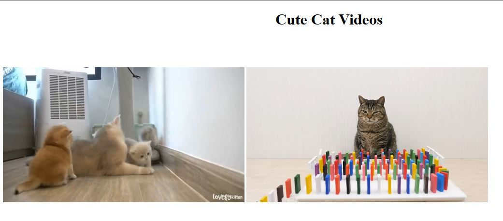

My Portfolio
Create a basic form
Learned how to create a web page with videos and audio inside.
CSS3 Basics
Learned the essentials of CSS3 to design and style modern web pages with ease. Start by enhancing a basic HTML webpage using creative styling techniques.

Designing a Website
By combining all the lessons, we were able to learn the step-by-step on how to transform simple concepts into stunning, fully functional websites that captivate and inspire.